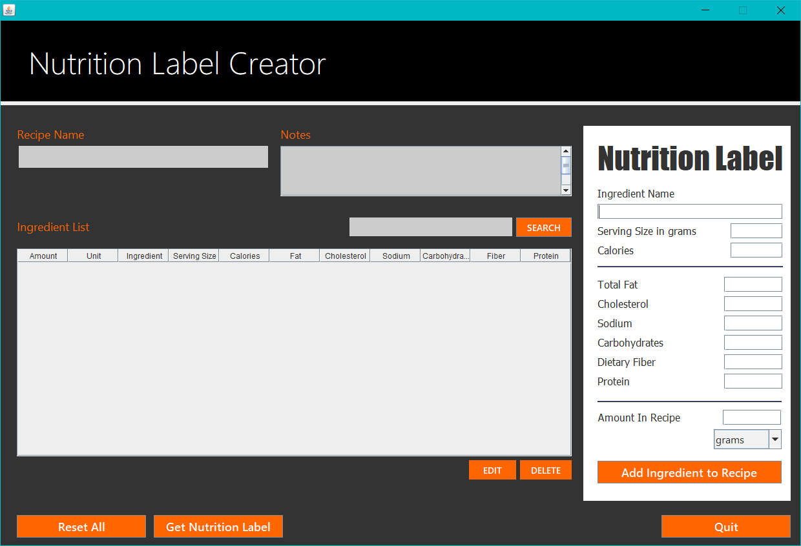
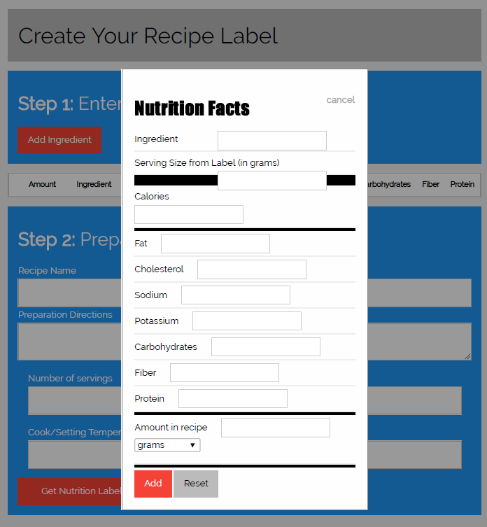
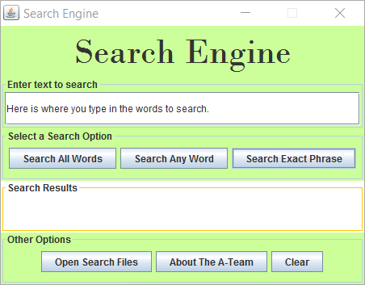
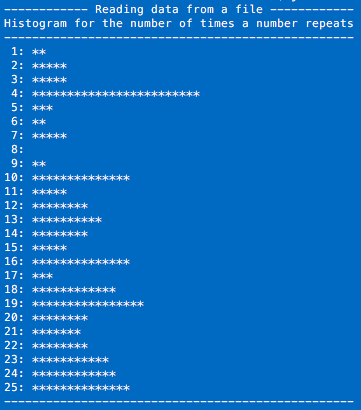
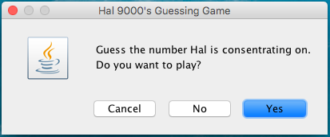
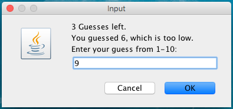
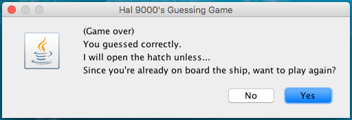
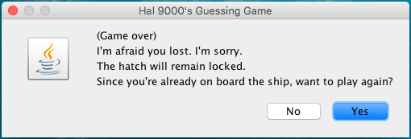
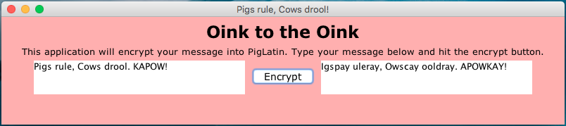
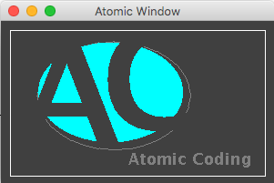

Java Programming Projects
Java has been my main focus of study and was used for my Capstone. Some of the work I have done in Java involved: JSP, Servlets, Java API, JAR, generics, design patterns, logging/tracing, JUnit testing, assertions, autoboxing, RegEx, inheritance, encapsulation, polymorphism, binding, collections, stack/heap, garbage collection, Interfaces, abstract classes, multithreading, concurrency, Javadoc, MVC, Version Control Systems, Lambda expressions, Serialization, CRUD, I/O and persistent data, and exception handling. For the GUI I have used NetBeans Forms, Swing, and AWT java classes.
Nutrition Label Generator

Personal project (WIP)
Stand-alone Java application that calculates and generates a nutrition label. This application allows the user to enter ingredients for a recipe to create their own nutrition label. It also saves ingredients entered to a file and allows the user to retrieve the data for future use. Code available on GitHub.
Web Nutrition Label

Class project
Web application that calculates a nutrition label for personal recipes. Code available on GitHub.
Search GUI

Java II group project
A stand-alone program using swing and AWT classes. My part of the project involved saving and retrieving data from a file, creating persistent storage and other data management. I created this GUI, another one was used for the group project. Code available on GitHub.
Temperature Conversion

Java I class project
A stand-alone GUI program that displays Fahrenheit to Celsius temperature conversion in a table using AWT and swing.
Histogram

Java I class project
A non-GUI stand-alone application that displays a histogram that reads values from a data file. The number of stars drawn shows how many times each value was entered as input.
Hal 9000




Java I class project
A stand-alone program using the JOptionPane class to play a guessing game. Program chooses a random number, user can guess up to 4 tries for correct number.
Pig Latin

Java I class project
A stand-alone Java GUI application using swing. It converts text entered by user in the left text area into Pig Latin.
Logo Graphic

Java I class project
This stand-alone program used the Graphics class in the Java API for drawing shapes and text.